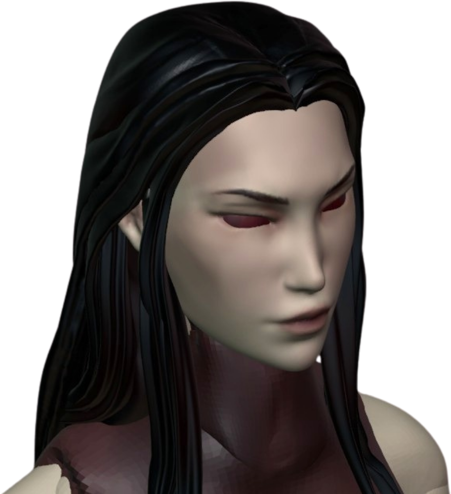
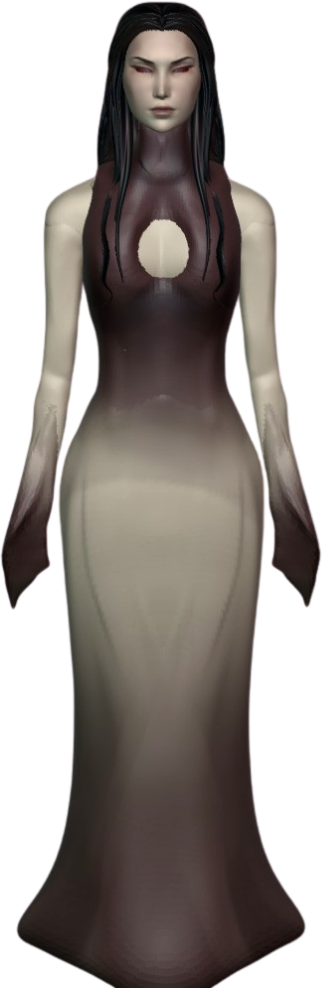
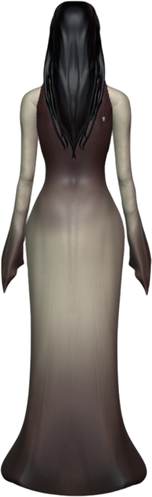
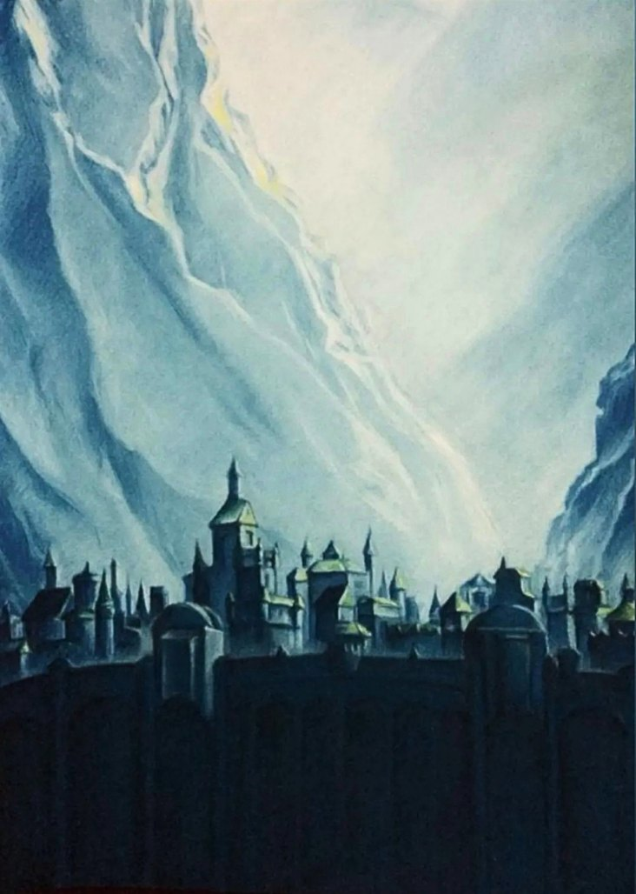
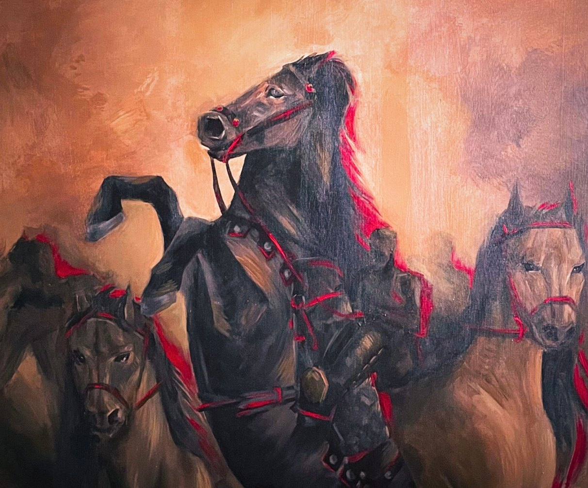
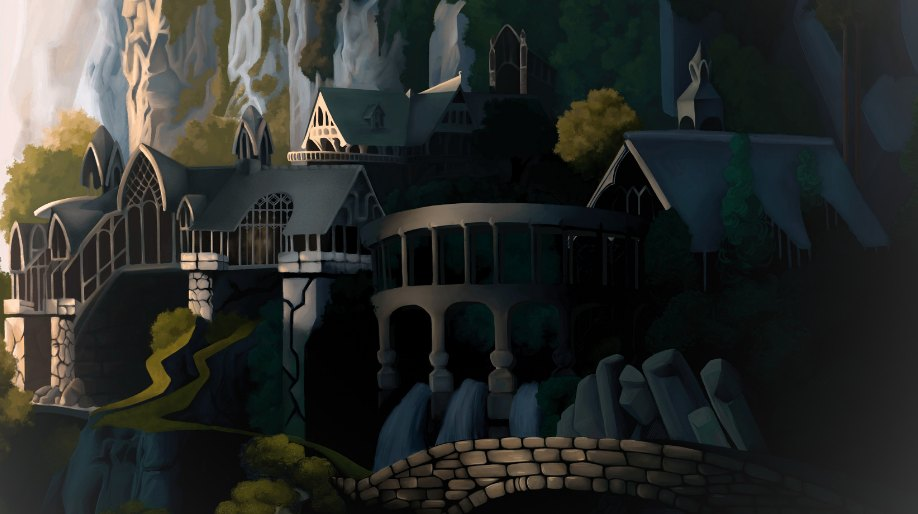
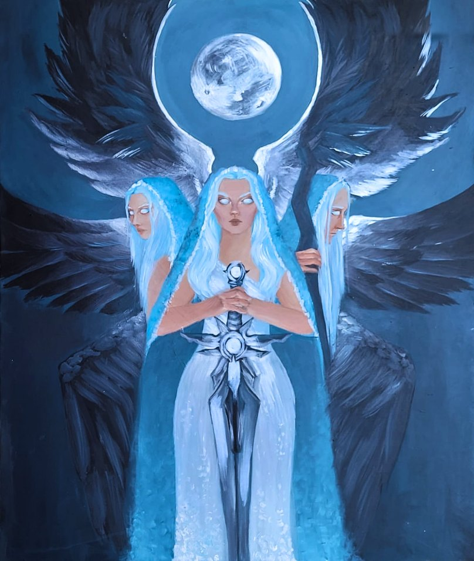
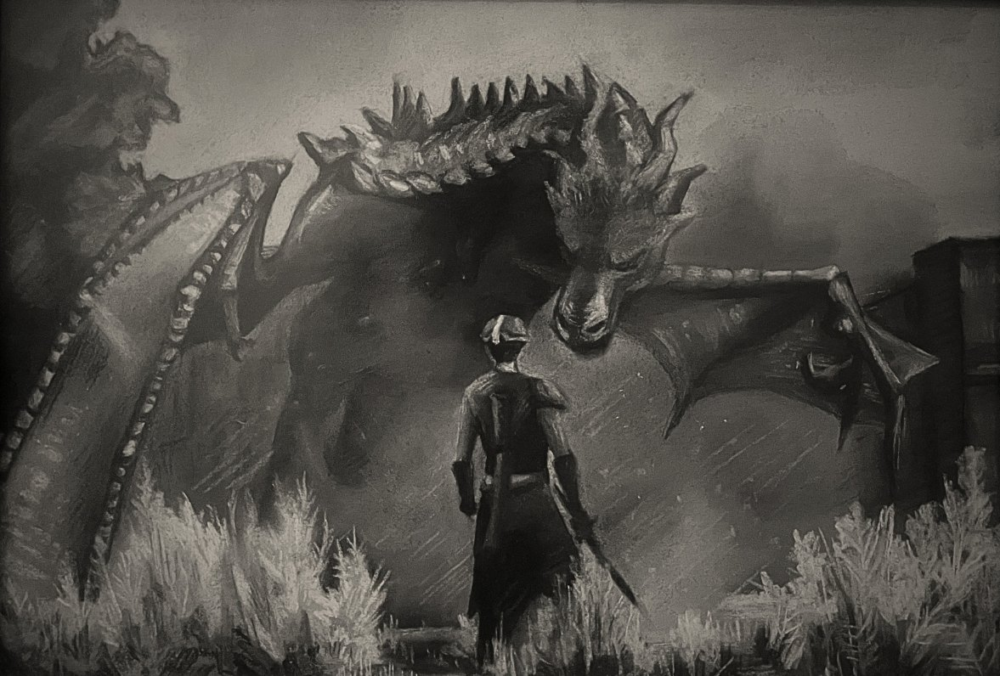
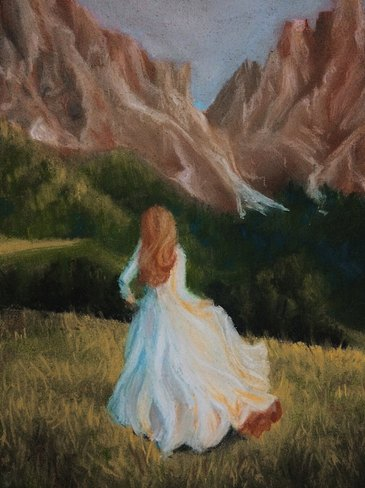
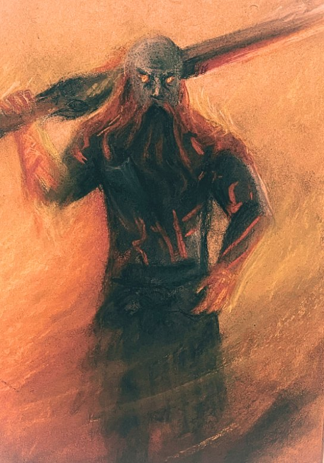
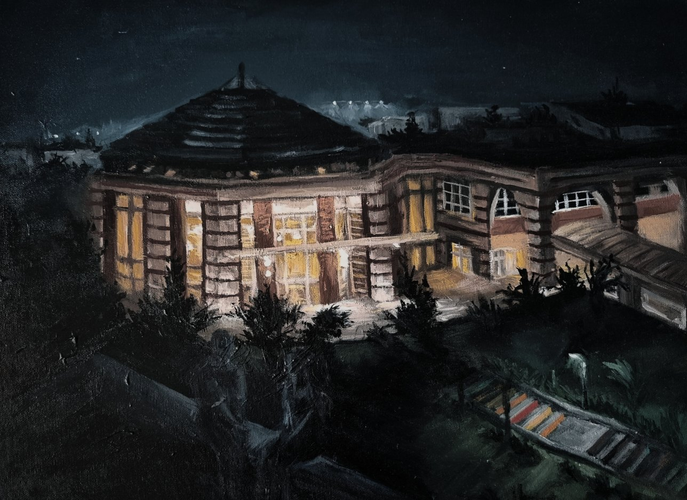
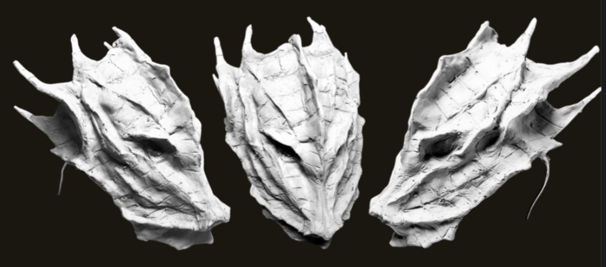
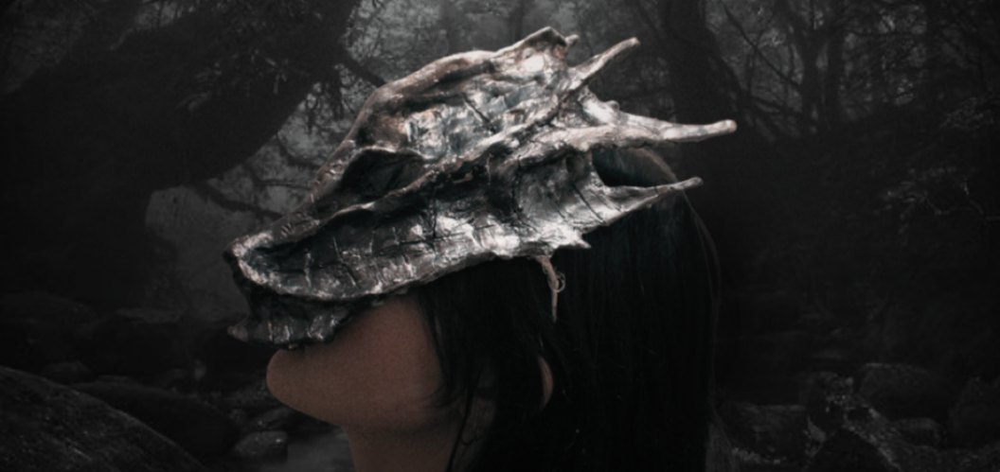
ABOUT
Fatmanur Bakar
Computer Science & Engineering and Visual Arts double major at Sabancı University.
I grew up surrounded by fantasy, folklore and old tales, and they still shape everything I make. My work moves between painting, sculpture and 3D, and I want to bring my artistic background together with my technical side to build new worlds through technology: worlds where old stories can be seen, explored and felt in new ways.